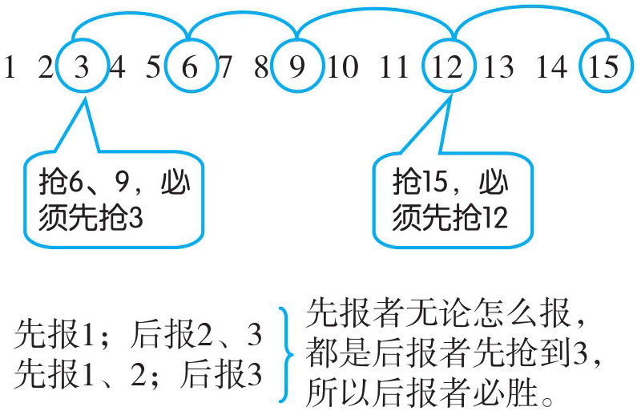
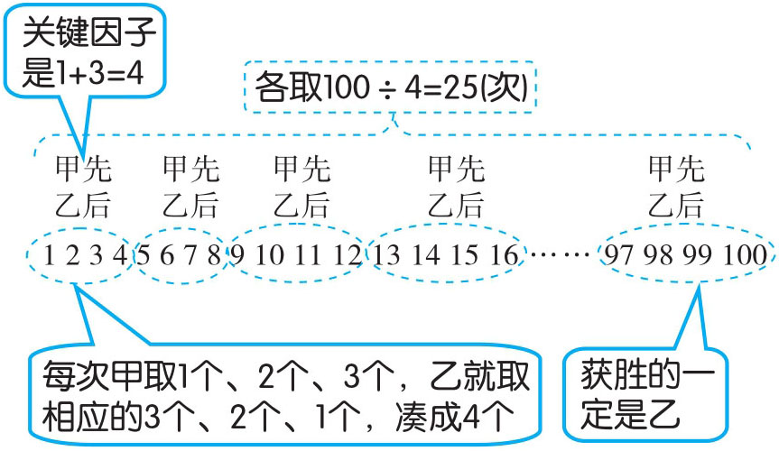
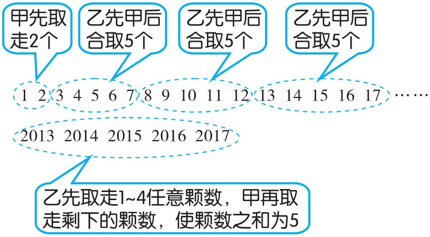
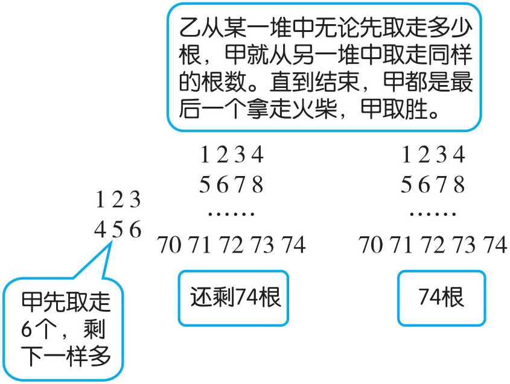
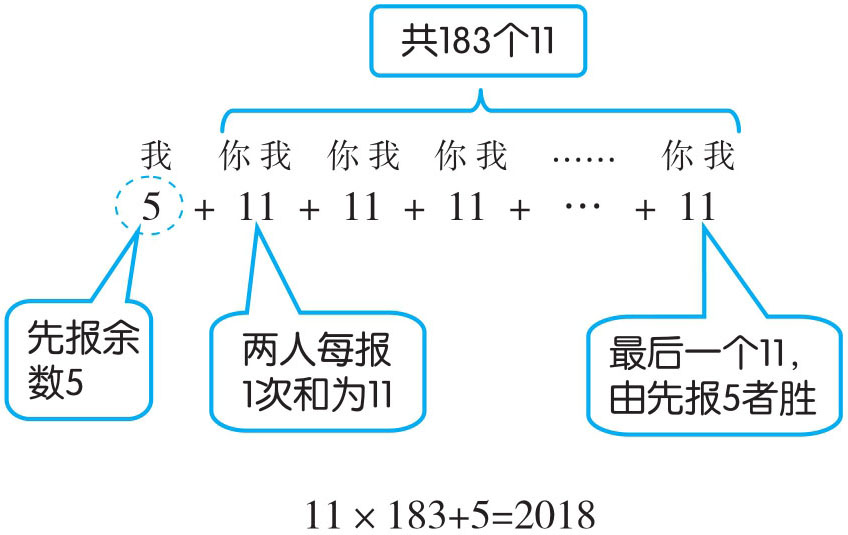

我国民间一直流传着一个名叫“抢十八”的数学游戏：参与游戏的两人从1开始轮流报数，每人每次可报一个数或两个连续的数，谁先报到18，谁就获胜。此类游戏活动，参与竞争的双方都想获胜，必须考虑对方可能怎样决策，从而选出一个最好的对付策略，这称为取胜策略。
这类问题要用倒推法进行研究，重要的是抢到关键数。关键数要根据游戏所能用到的关键因子（最大数和最小数的和）来确定。如“抢十八”游戏中关键因子就是3（最大数2＋最小数1），我们从最后一个数依次减3，通过倒推可以找出游戏中所有关键数：18、15、12、9、6、3。这个游戏是一个不公平的游戏，报数顺序决定了最后的结果：只有后报数者才能抢到这一系列关键数，后报数者才有必胜策略。如果最后报数与关键因子相除有余数，先报数者有必胜策略：先消除余数，后报数者又成了上面所说的“先报者”，他就抢不了关键数。
例1 两人按自然数顺序轮流报数，每人只能报1个或2个数。比如第1个人可以报1，第2个人可以报2或2、3；第1个人也可以报1、2，第2个人可以报3、4。这样继续下去，谁报到15，谁就获胜。怎样才能做到必胜？

先抢到3就能做到必胜。
例2 塑料盒里有100个乒乓球，甲、乙两人每次轮流取走1~3个，谁能取完盒子里的乒乓球谁就获胜。如果双方都采取最佳取法。甲先取，那么获胜的一定是谁？

获胜的一定是乙。
例3 有2017颗珠子，甲、乙两人进行取珠子比赛，规则是两人轮流取，每人每次最少取1个，最多取4个，取到最后一颗珠子的人为胜。如果甲先取，如何取才能保证甲取胜？
这题的关键因子是：1+4=5。2017÷5=403……2，此题最后的颗数（2017）与关建因子（5）相除有余数（2），就要先消除余数。

2017÷(1+4)=403……2甲先取2颗珠子，然后每次乙取完之后，甲总是取出适量的珠子，保持与乙取出珠子的个数和为5。直到最后只剩下5个球，无论乙取几个球，甲都能取到最后一个球。
例4 有两堆火柴，一堆80根，一堆74根。规则为甲、乙两人轮流从中拿走一根或者几根，甚至一堆，但每次只能在某一堆中拿火柴，谁拿走最后一根火柴，谁就获胜。试问甲如何获胜？
两堆火柴的数目不一样，为使策略更清晰，我们假设这两堆火柴数目是相等的，那么我们发现，后取者只要根据先取者的取法，在另一堆中取相同数目的火柴，就能保证后取者取到最后一根火柴，因此，甲应该从80根火柴中先取走80-74=6（根）火柴，以保证两堆火柴相同，然后在另一堆中取出与乙取的火柴的相同根数就会获胜。

答：甲先从80根一堆中取走6根火柴，保证两堆火柴数目相同。再由乙取，这时甲在乙未取的另一堆中取出与乙取的火柴一样多的根数，直到最后，甲一定胜。
例5 有一种报数游戏，游戏的规则是：
（1）两人轮流报数；
（2）每人报的数只能是1~10中的某一个数；
（3）谁报数后两人所报数字之和是2018，就算谁胜。
如果先让你报，你应该报几才能胜利？为什么？你获胜的策略是什么？
报数求和实际与取珠子的道理一样，先消除余数，再凑关键因子1+10=11。因为2018÷11=183……5，所以，先报5，以后当对方报一个数a (1≤a ≤10)，你就应该报（11-a ）这个数，当对方报了183次后，你最后一次报数必胜。

2018÷11=183（次）……5（个）
答：如果是我先报，我先报5，以后对方每报一个数，我都相应报一个数与他凑成11。一直到对方报到183次后，我报最后一个数取胜。
1．两人按自然数顺序轮流报数，每人只能报1~3个数。比如第1个人可以报1，第2个人可以报2……反之亦然。这样一直报下去，谁先报到60，谁就获胜。怎样才能做到必胜？
2．盒子里有1000颗珠子，甲、乙二人每次轮流取走1~4个，谁先取完盒子里的珠子谁就获胜。如果双方都采取最佳取法。乙先取，那么获胜的一定是谁？
3．付强、付亮轮流报数，每次只能报1~6个数，从1开始一直报到100，谁先抢到100谁就胜。付强怎么报数就一定能取胜？
4．有两个盒子都装着糖，一个盒子装着60颗，另一个盒子装着53颗。规则为小游、小石两人轮流从中拿走1颗或者几颗，甚至一盒，但每次只能在某一盒中拿，谁拿走最后一颗糖，谁就获胜。试问小游如何取胜？
5．贾伟、韩勇两人抓珠子，规定最多可以抓5个，最少可以抓1个。谁抓到最后一个棋子就算输。若贾伟先抓，且珠子总数有1801个。问：韩勇是否有必胜的把握？
6．甲、乙两人轮流在黑板上写下405个数：1、2、3、…、404、405，甲、乙二人轮流擦掉黑板上的一个数（甲先擦乙后擦），如果最后剩下的两个数一定互质，则甲胜；否则，乙胜。问：谁有必胜的把握，必胜的对策是什么？
7．有三个盒子。每盒分别装有3个、5个、12个乒乓球。甲、乙两人轮流从中取走球。规定：
（1）轮流取，至少要每次取走一个乒乓球。
（2）每次只能从一盒中取走球，取走的个数不限；也可一盒全取走。
（3）最后一个取到乒乓球者获胜。
问：先取者获胜的策略是什么？
8．一排由1001个同样大小的正方形组成的方格，甲、乙两人做“青蛙”跳格游戏，预先在左边第一格中放一只“青蛙”，然后轮流跳，乙先甲后。每人每次走时，可以将“青蛙”跳1~4格，规定谁将“青蛙”跳最后一格谁输。乙为了必胜，第一步走几格？以后怎样走？